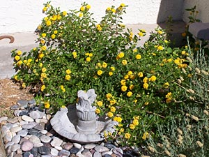
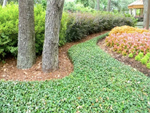

Groundcover

Our featured ground cover is the yellow lantana. You can easily envision how it spreads and covers the ground, thus earning it a featured spot in the ground cover category.
Rock and bark also make nice ground covers, especially in arid regions, but we don't sell rock or bark. That waterless fountain in the photo isn't for sale either. Best if you just ignore all that and concentrate on the lantana.
Groundcover Facts
Groundcover typically grows on the ground and grows enough to cover it. I suppose you could also grow it on a wall or something, but then we'd have to call it wallcover instead of groundcover, but that doesn't sound as cool and I don't feel like renaming this page.
Groundcover Varieties

